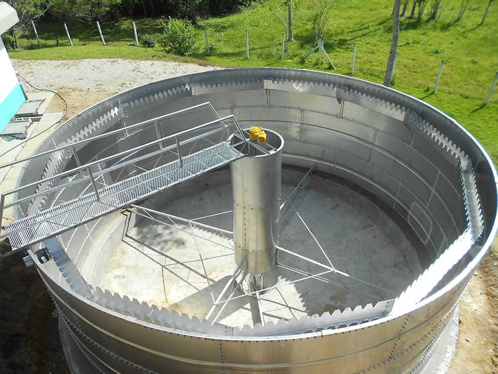
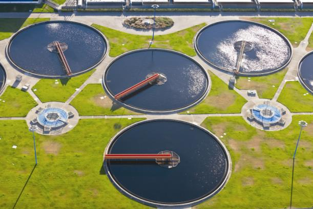
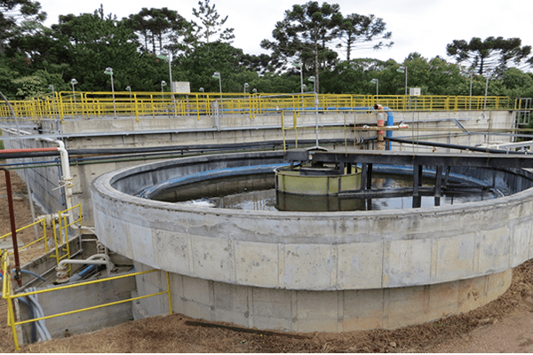

Na sedimentação de um sistema de Estação de Tratamento de Esgoto (ETE), várias etapas e processos ocorrem para separar os sólidos suspensos e densos da água residual. A sedimentação é uma etapa fundamental no tratamento de águas residuais e envolve a remoção de partículas sólidas através da gravidade.
Decantação de Sólidos Suspensos: A água residual passa por tanques de sedimentação, onde as partículas sólidas presentes na água tendem a se depositar no fundo do tanque devido à gravidade. Este processo ajuda a remover sólidos em suspensão da água.
No processo de sedimentação em uma ETE, a água residual passa por tanques projetados para promover a clarificação. Durante esse processo, os sólidos suspensos presentes na água se separam por gravidade, sedimentando-se no fundo do tanque. Periodicamente, é necessária a remoção dos sedimentos acumulados para evitar a obstrução dos tanques e garantir a eficiência do tratamento. Esse processo de sedimentação resulta na melhoria da qualidade da água tratada, reduzindo a turbidez e removendo uma quantidade significativa de poluentes, tornando-a adequada para descarga ambiental ou reutilização em outros processos industriais ou agrícolas.
